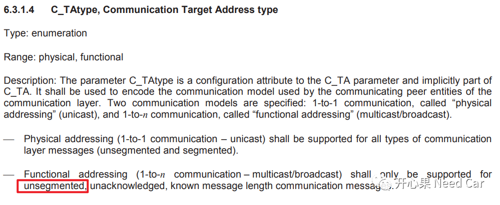
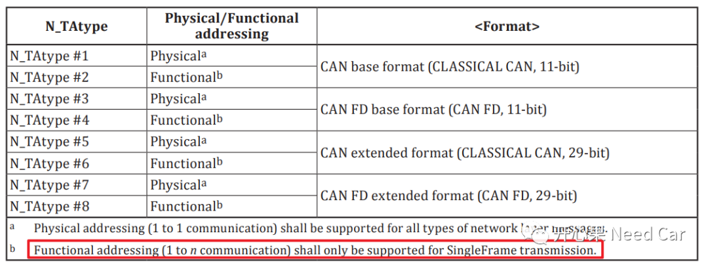
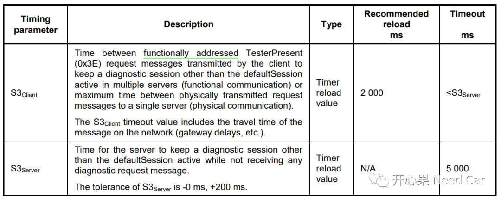
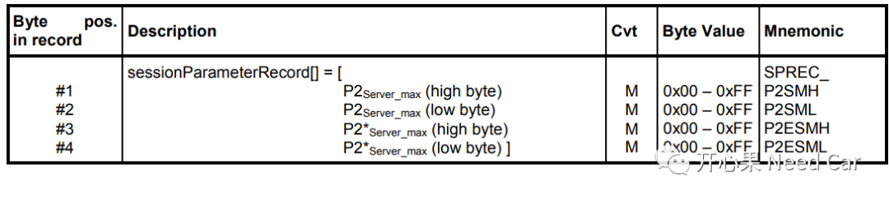
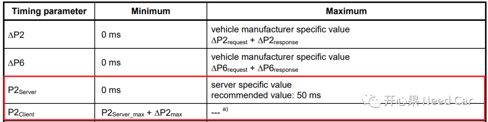
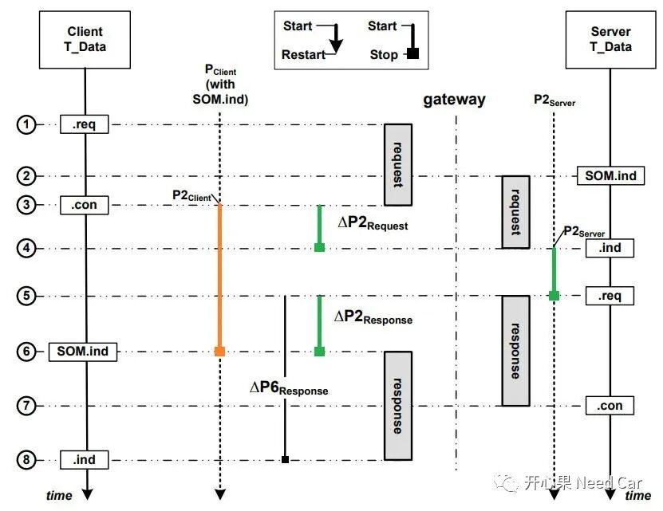
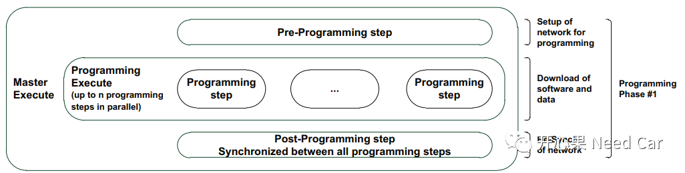

开心果 Need Car · 2022-04-23T12:53:00+08:00 · 微信原文
“德善啊，爸爸我也不是一生下来就是爸爸，爸爸也是头一次当爸爸，我的女儿啊，稍微体谅一下吧！”-《请回答1988》
评论：看到这段的时候，破防呐
QA1：功能寻址支持分段传输吗？
答：不支持。不管是CAN总线还是Fexray总线，功能寻址均不支持分段传输。
Flexray总线规范说明如下：

CAN总线规范说明如下：

QA2：什么是Bootloader软件刷写的鲁棒性测试？
答：我们知道，当软件开发好以后，会进行各种测试，以确保软件的稳定性。而软件稳定性的测试不是一锤子买卖，不能测试一次、两次没事，就说软件开发好了。Bootloader软件刷写鲁棒性(Robustness)测试是指对Bootloader软件进行连续多次的刷写测试，且一次Fail都没发生，以此验证Bootloader软件的可靠性。举例：Bootloader连续刷写Application程序200次，均没有失败，说明Bootloader软件程序鲁棒性可靠。刷写次数，每家OEM的要求可能不同。
虽然Bootloader软件鲁棒性测试时，一般只连接一个ECU进行刷写，功能寻址(Functional)的$3E 80也需要发送。此时可能约束TesterPresentTimer（S3Client）时间更严苛一些，比如：需求定义TesterPresentTimer = 2000ms，而在压力测试时TesterPresentTimer = 100ms。
刷写过程中，常使用功能寻址发送$3E 80。注意，$3E 80即可以支持物理寻址，也可以支持功能寻址，具体使用根据项目需求决定。

QA3：P2Client_max、P2*Client_max与$10服务sessionParameterRecord有联系吗？
答：按照14229-1规范，$10服务的正响应会给出sessionParameterRecord参数值，而这个参数值的确切数值由需求定义，具体如下所示：

也就是说，14229-1规范约束sessionParameterRecord参数是P2Server_max和P2*Server_max。
但是，我曾碰到这样的需求：sessionParameterRecord参数表示P2Client_max和P2*Client_max。
我们知道：P2Server_max、P2*Server_max与P2Client_max、P2*Client_max约束的对象不同，P2Server_max和P2*Server_max约束ECU，P2Client_max和P2*Client_max约束上位机。所以，个人更倾向sessionParameterRecord表示P2Server_max和P2*Server_max的说法。
QA4：P2Client_max与P2Server_max啥关系？
答：P2Client_max与P2Server_max并没有什么关系，是两个时间参数，在QA3中已经说过。这里又为什么提呢？挖一些细节的东西。P2Client与P2Server的时间范围如下所示：

P2Client与P2Server的时间起、止如下所示。当网关存在时，路由时间△P2request 与 △P2response不可避免，这也意味着P2Client＞P2Server，即P2Client = △P2request +△P2response +P2Server。
这里我们认为存在Gateway，P2Client＞P2Server，实际，就算没有Gateway，P2Client＞P2Server这个表达式也应该成立，因为诊断指令在总线传输也需要时间，而P2Server是ECU在软件层面的处理时间，具体说是DCM模块收到诊断请求到应答请求的时间。

如果没有Gateway，实际P2Client与P2Server确实比较接近。但是在实际的开发中，P2Client_max与P2Server_max会有明确的数值定义，比如：
| Minimum | Maximum | |
| P2Server | 0ms | 50ms |
| P2Client | 50 + 10ms | 100ms |
P2Client的最小值为什么是50 + 10ms?P2Server_max = 50ms，△P2max = 10ms（即诊断路由的最大约束时间，这里假设10ms）。
这个问题我们延伸一下：碰到带Gateway的诊断请求时，Gateway节点响应上位机的时间可能＞50ms，所以，不能用P2Server_max去测试，要把路由的限制时间考虑进去。该问题可以延伸一下，参考前文Uds诊断：Gateway节点响应$10 02服务时机，要精准拿捏。
QA5：$10 02在Application、Bootloader中的寻址类型使用
答：需求中，每个会话(Session)下支持哪些Service，使用何种寻址方式，均提前定义。$10 02也不例外：
比如：Application下，$10 02只能使用功能寻址（Functional）；Bootloader中，$10 02即可以功能寻址，也能物理寻址（Physical）。为什么区别对待呢？我们知道，刷写一般是三部曲：Pre-Programming Step、Programming Step、Post-Programming Step。

在Pre-Programming Step阶段，我们想让目标网段内的所有ECU均关闭非诊断通信（CommunicationControl，0x28）、禁止DTC操作（ControlDTCSetting，0x85）等，此时，程序在Application中运行（拓展会话，0x03），显然只能使用功能寻址做到，物理寻址做不到；进入Bootloader程序（编程会话，0x02）以后，在Programming Step阶段需要使用物理寻址，实现单节点的程序更新，最后在Post-Programming Step阶段需要所有的ECU重新恢复通信，并且使能DTC操作，因此又需要使用功能寻址。更多细节信息参考前文基于UDS刷写，0x28、0x85服务可以不用吗?。
写在最后
“细节决定成败”，很多工程实际问题源于对细节的掌控，希望能和大家一起深挖开发中的每个细节，一起提升技术能力，找到开发的乐趣，我会持续不断输出，未完待续！
参考资料
ISO/FDIS 14229-1/2:2012(E) .pdf
往期精彩回顾